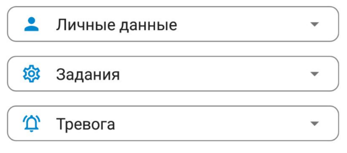

- О системе
-
Fenomy сегодня - это совершенно бесплатный инструмент, который поможет эффективно организовать личную безопасность для вас, вашей семьи и друзей. В дальнейшем, Fenomy позволит решать более широкий круг повседневных задач и даже зарабатывать.
Fenomy — экосистема с использованием элементов технологии blockchain, построенная на основе принципов горизонтальной экономики. Fenomy состоит из облачного центра обработки данных и кругов пользовательских связей, сформированных по принципу личной лояльности участников друг другу. Круги в системе Fenomy имеют реальный, а не виртуальный характер и отражают связи между людьми в реальной жизни. Все взаимодействия в системе происходят внутри кругов.
- Круги
-
- Первый круг формируют сами участники через прямой личный контакт с другими людьми при помощи мобильных устройств или через обмен специальными кодами. Первый круг — это как правило члены семьи, друзья, коллеги, просто знакомые, то есть все, кого участник знает лично, с кем сформированы лояльные отношения, доверие.
- Второй круг участника формируется автоматически системой из тех, кто входит в первый круг участников первого круга.
- Третий и четвёртый круги — формируются по тому же принципу, что и второй круг.
- Профиль
-
Раздел состоит из общей информации о вашем профиле, балансе, количестве ваших связей и их распределении по кругам. Также, в разделе Профиль можно создавать связи, редактировать свои пользовательские данные и настраивать политику взаимодействия с вашими кругами.
Настройки доступны в трёх вкладках: Личные данные, Задания и Тревога.

Заполнение личных данных не является обязательным. Вы можете их внести, по желанию, для повышения удобства взаимодействия с другими пользователями.
Email можно указать для получения на него своих регистрационных данных и возможности последующего восстановления доступов, если они будут утеряны.
Телефон указывать не обязательно. Проверка на принадлежность номера пока отключена.
Навыки - инструмент пока в работе и будет использоваться в последующем для инструмента «Задания». Вы можете указать свои навыки и они будут сохранены в системе.
 Вкладка Задания
Вкладка Задания
Кому отправлять задачи - укажите кому вы будете отправлять задания.
Принимать задачи от - укажите от кого вы согласны принимать задания.
Принимать задачи на удалении до - здесь можно указать предельное расстояние на котором вы готовы принимать задания от ваших кругов.
Вкладка Тревога
Кому отправлять тревогу - укажите кому должен быть отправлен сигнал тревоги в случае её вызова.
Принимать тревогу от кругов - укажите от каких кругов (включительно) вы согласны принимать сигналы тревоги. Если вы захотите принимать тревогу только от семьи или друзей, вам необходимо выбрать 1 круг и там установить нужные опции.
Принимать тревогу на удалении до - этот параметр ограничит по расстоянию видимость сигналов тревоги от ваших кругов.
Для первого круга любое удаление - если здесь поставить галочку, вы будете видеть все сигналы тревоги от вашего первого круга как бы далеко вы не находились.
- Связи
-
Связи - самая важная часть системы. Для создания новой связи необходимо перейти в Профиль и выбрать Создать связь. Если вы принимаете связь, то необходимо выбрать Принять связь.
 В настоящий момент доступно создание связей через QR и через обмен кодами.
В настоящий момент доступно создание связей через QR и через обмен кодами.
- Если вы выбираете QR, то у вас его должен отсканировать принимающий связь.
- Если вы выбираете Обмен кодами, то вы должны сообщить принимающему код, который вы увидите на экране, а после ввести ответный код, который вам сообщит тот кто принимает связь.
После образования связи в появившемся диалоге вы можете указать дополнительные опции, которые будете видеть только вы:
- Присвоить связи принадлежность к семье, друзьям, коллегам.
- Назвать связь (пример: Мама, Петя, Сосед, Тренер и т.д.).
После создания связи вы сможете её отредактировать или удалить в разделе Ваши связи.
- Инструмент Тревога
-
Позволяет запросить срочную помощь или получать сигналы о тревоге внутри ваших кругов.
Для вызова или завершения тревоги необходимо в течение 3 секунд удерживать кнопку ТРЕВОГА.
После того как кнопка станет красной, можно отправлять короткие сообщения, которые увидят все, кто примет вызов.
Для того, чтобы принять вызов, необходимо перейти по уведомлению в подробности тревоги и нажать Принять вызов.
Подробнее о том как работает тревога.
- Инциденты
-
В разделе Инциденты можно найти все актуальные вызовы. Если в разделе пусто, значит в настоящий момент актуальные вызовы отсутствуют.
Все завершенные вызовы можно найти в разделе История.
- События
-
В разделе События можно найти все последние инциденты, транзакции, приглашения, а также важные уведомления от Системы.
Все события, которые вы еще не видели, подсвечиваются и их число также появляется на панели справа от заголовка.
- Местоположение по запросу
-
*** Экспериментальная возможность! Для некоторых устройств может работать не корректно!
В разделе Связи можно для любой связи разрешить запрашивать ваше последнее местоположение, которое знает ЦОД. Для этого необходимо нажать на значок редактирования связи и поставить флажок на опции Предоставлять этой связи данные о моем местоположении по запросу
 Если тот с кем у вас установлена связь предоставит вам такое разрешение, то вы увидите в списке связей кнопку Запросить местоположение.
Если тот с кем у вас установлена связь предоставит вам такое разрешение, то вы увидите в списке связей кнопку Запросить местоположение.
 Местоположение устройства, у которого разрешили запрашивать местоположение, обновляется 1 раз в 15 - 60 минут.
Местоположение устройства, у которого разрешили запрашивать местоположение, обновляется 1 раз в 15 - 60 минут.
- История
-
В разделе История можно посмотреть все завершенные инциденты и транзакции.
- Баланс
-
На балансе отражено количество Fenomy coin (FNM), которыми вы владеете.
ВАЖНО! Все инструменты системы совершенно бесплатные для любого пользователя. Для использования системы пополнение баланса не требуется.
- Дорожная карта
-
В самое ближайшее время в приложении начнут работать следующие инструменты:
- Местоположение по запросу
- Авторизация через QR, EMAIL, SMS
- Аватар участника
- Предустановленные профили поведения
- Инструментарий для заданий/поручений
- Компании/Объединения/Группы
- Инструментарий для координации на местности
- Публичные люди
- Массовые поручения
- Рейтинги и отзывы
- Внутренние переводы FNM
Кроме того, мы постоянно совершествуем уже существующие возможности системы.
- Контакты
- Политика конфиденциальности